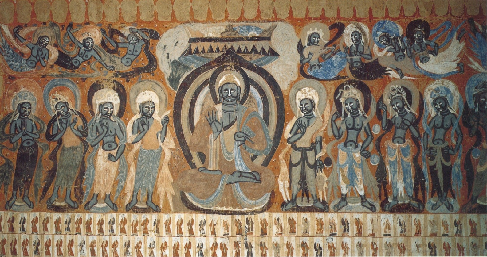
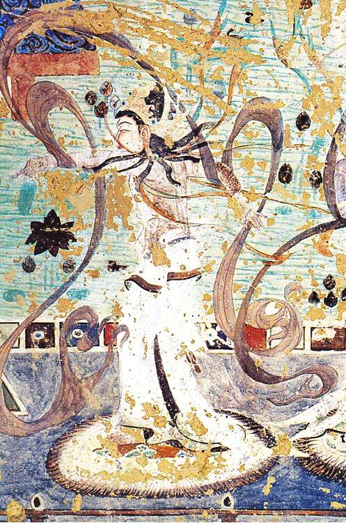

壁画里的人一直在跳舞，跳了一千年。
敦煌壁画中有大量的乐舞场景。据统计，莫高窟壁画中出现的乐器有44种、5000多件，乐队组合有500多组。这是研究古代音乐最丰富的图像资料。
壁画中的乐舞场景主要出现在经变画里。佛经说佛在说法时，天上会响起音乐，天女会翩翩起舞。画师们就把这些场景画出来佛坐在中央，两侧是乐队和舞者，天上飞天散花奏乐。
这些乐队的编制非常丰富。有的是纯中原乐器组合（琵琶、筚篥、笛、鼓），有的是纯西域乐器组合（五弦、箜篌、腰鼓），更多的是中西混编。这种混编乐队在现实中也存在唐代燕乐的十部乐里就有龟兹乐、天竺乐等高外来乐种。
舞蹈的种类也很丰富。有柔美的长袖舞、有刚劲的胡旋舞、有杂技性质的倒立舞。第112窟的反弹琵琶舞伎是最著名的形象舞者一边跳舞一边把琵琶举到身后弹拨，这个动作在现实中几乎不可能完成，但在画面上美得惊人。


壁画里出现的乐器，有些今天还在用，有些已经失传了。
弹拨 四弦 梨形
出现频率最高的乐器。壁画中的琵琶有横抱和竖抱两种姿势，横抱是早期的弹法，竖抱是唐代以后的弹法。
吹奏 双簧 西域
从西域传入的双簧管乐器，音色高亢穿透力强，常用于壁画中的合奏场景，是唐代燕乐中的重要管乐。
弹拨 竖琴 西域
竖箜篌形似竖琴，从西域传入中原。在敦煌壁画中多见于天宫乐队，是飞天常见的伴奏乐器之一。
打击 细腰 鼓舞
两头大中间细的鼓，挂在腰间或挎在腋下演奏。是胡旋舞的标配伴奏乐器，节奏感极强。